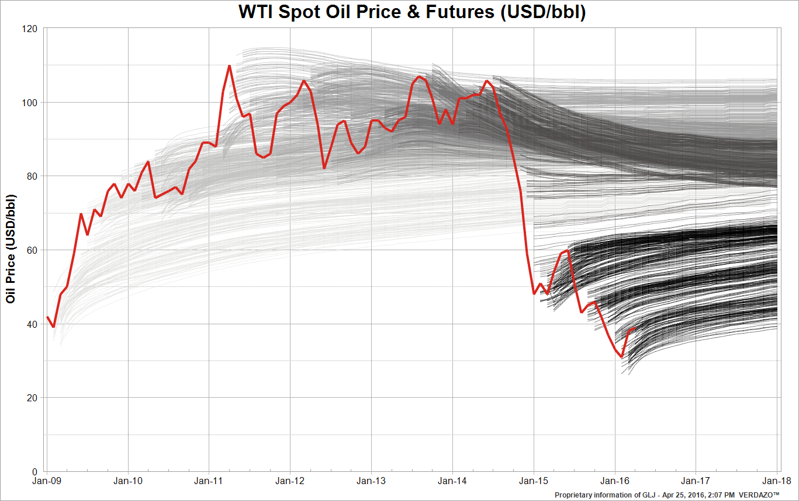

BUSS386 Futures and Options
Formally, we claim that a trading strategy is an arbitrage if it satisfies the following conditions.
Also, we can apply the no arbitrage argument to two assets (portfolios) \(A\) and \(B\) that will generate the same cash flows in the future in every condition.
The current prices of assets \(A\) and \(B\) should be the same. Otherwise, an arbitrage exists.
If current prices are different, we can make an arbitrage through ``buy low and sell high’’.
\(\Rightarrow\) However, an arbitrage should NOT exist in a purely competitive financial market.
In making an arbitrage strategy, we assume the followings.
We consider an investor who has nothing in hand at the beginning of the strategy and liquidates all assets at the end.
We measure profit/loss in terms of cash flows.
The investor can borrow money (sell a bond) or lend money (buy a bond) at the risk-free rate.
e.g. If we buy a bond at the rate \(r\),
| Action | time 0 | time \(T\) |
|---|---|---|
| buy a bond | -1 | \(e^{rT}\) |
In constructing an arbitrage, we assume that the market allows short selling.
Def. Short selling is selling an asset that we do not own.
e.g. Suppose that an investor wants to short a stock at time \(0\) at the current price of $120.
| Action | Year 0 | Year 1 |
|---|---|---|
| (Short) Sell a stock | 120 | -100 |
What if the share pays dividend?
Then, the shorting investor needs to pay the dividend to the original owner.
e.g. An investor shorts a stock at time 0 whose current price is $120. The stock pays $5 dividend in six month.
| Action | Year 0 | Year 0.5 | Year 1 |
|---|---|---|---|
| (Short) Sell a share | 120 | -5 | -90 |
Assumptions
Notation
Your goal is to own a stock at \(T\).
At the contract maturity \(T\), the two strategies should have to same cash flow.
No net cash flow today. Therefore:
\[ F_0 = S_0e^{rT} \]
Let’s consider the following two portfolios:
At the contract maturity \(T\), the two portfolios have the same cash flows:
Thus, their current value should be the same:
\[ 0 + F_0e^{-rT} = S_0 \]
\[ F_0 \neq S_0 e^{rT} ? \]
\(\Rightarrow\) An arbitrage exists.
e.g. Consider a 3-month forward contract on a stock whose current price is $40. The 3-month risk-free interest rate is 5% per annum.
What if the forward price is \(43 ~( > 40e^{0.05\times 3/12})\)?
\(\Rightarrow\) There is an arbitrage:
| Action | Cash flow in 0 | Cash flow in 3 months |
|---|---|---|
| buy stock | -40 | \(S_T\) |
| short forward | 0 | \(43 - S_T\) |
| sell bond | 40 | -42.497 |
| net | 0 | 0.503 |
What if the forward price is \(39 ~( < 40e^{0.05\times 3/12})\)?
\(\Rightarrow\) There is another arbitrage strategy:
| Action | Cash flow in 0 | Cash flow in 3 months |
|---|---|---|
| sell stock | 40 | -\(S_T\) |
| buy forward | 0 | \(S_T - 39\) |
| buy bond | -40 | 41.503 |
| net | 0 | 1.503 |
| Action | Cash flow in 0 | Cash flow in 1 year |
|---|---|---|
| buy stock | -50 | \(S_T\) |
| short forward | 0 | \(51 - S_T\) |
| sell bond | 50 | -53.5 |
| net | 0 | -2.5 |
\[ F_t = S_te^{r(T-t)} \]
Until now, we have assumed that the underlying assets in forward do not pay any dividends.
What if the underlying asset will pay dividends in the future? Are there changes in forward prices?
\(\Rightarrow\) Yes, because…
We consider two different forms of dividend payments.
We first consider the case of discrete dividends.
Suppose that stock pays dividends until the maturity \(T\). The present value of all future dividends is \(I\).
The forward price is
\[ F_0 =(S_0 - I)e^{rT} \]
Why? Consider the following two portfolios:
At the contract maturity \(T\), the two portfolios have the same cash flows:
The portfolio values are the same at \(T\). Thus, their current values are the same:
\[ 0 + F_0e^{-rT} + I = S_0 \]
Q1. Consider a 9-month forward contract on a corporate bond. The current price of the corporate bond is $900, and it will pay $40 coupon in 4 months. The 4-month and 9-month risk-free rates are 3% and 4%, respectively. If there is no arbitrage, what is the forward price?
Answer: The forward price is
\[ (900 - 40e^{-0.03\times4/12})e^{0.04\times 9/12} = 886.60 \]
Q2. Consider the 9-month forward contract on the corporate bond in Q1. Suppose that the forward price is $910. Is there an arbitrage? If so, show the arbitrage strategy.
Answer: 886.60 \(<\) 910. Thus, we can think of the following arbitrage strategy:
| Action | Cash flow in 0 | Cash flow in 4 months | Cash flow in 9 months |
|---|---|---|---|
| buy corporate bond | -900 | 40 | \(S_T\) |
| short forward | 0 | 0 | \(910 - S_T\) |
| sell 4-month bond | 39.70 | -40 | 0 |
| sell 9-month bond | 872.90 | 0 | -910 |
| net | 12.60 | 0 | 0 |
Some securities pay continuous dividends (e.g, stock index, foreign currency).
To simplify the argument, we assume that the dividends will be reinvested immediately to buy more shares.
Let \(q\) denote the dividend yield per annum. Stock price at time \(0\) is \(S_0\).
If we invest for \(T\) years, the number of shares increases by \(e^{q T}\).
\[ F_0 = S_0e^{(r-q)T} \]
Why? Consider the two portfolios:
The two portfolios will have the same cash flows at \(T\):
Therefore, the two portfolios should have the same present values:
\[ 0 + F_0e^{-rT} = S_0e^{-qT} \]
\[ F_0 = S_0 e^{(r-r_f)T} \]
where \(r_f\) is the foreign risk-free rate.
Q1. Suppose that the 2-year interest rates in Hong Kong and the United Kingdom are 3% and 1%, respectively, and the spot exchange rate between the British Pound (GBP) and the Hong Kong Dollar (HKD) is 9.65 HKD per GBP. A 2-year forward exchange rate is 11.00. Is there an arbitrage for Hong Kong investors?
Answer: \(11.00 > 9.65e^{(0.03-0.01)\times2}\). Thus, there is an arbitrage. We can consider the following strategy:
| Action | Cash flow now | Cash flow in 2 years |
|---|---|---|
| buy GBP | -9.47 | \(S_T\) |
| short forward | 0 | 11.00 - \(S_T\) |
| sell HK bond | 10.40 | -11.00 |
| net | 0.93 | 0 |
Storing commodities has costs and benefits
Forward price with proportional storage cost \(u\)
\[ F_0 = S_0 e^{(r+u)T} \]
\[ F_0 = S_0 e^{(r-y)T} \]
\[ F_0 = S_0 e^{(r-y+u)T} \]

May be no storage or very limited storage life: electricity, lettuce, strawberries, temperature, rainfall, …
For non-storable commodities, forward prices can have information about future spot prices because no-arbitrage conditions don’t hold (i.e. not tied to current price)
| Value at \(0\) | Value at \(t\) | |
|---|---|---|
| Forward with \(F_0\) | 0 | \(f\) |
To find the time-\(t\) value of the forward with \(F_0\), we consider another forward that we just start at \(t\).
Consider the following two portfolios at \(t\):
The two portfolios will generate the same cash flows at \(T\):
Then, the time-\(t\) values of the two portfolios should be the same. As a result, the time-\(t\) value of the long position in forward with \(F_0\) is
\[ f + (F_0-F_t)e^{-r(T-t)} =0 \]
In a similar way, we can find time-\(t\) value of short position in forward with \(F_0\) that we started at time 0.
Consider the two portfolios at \(t\):
The two portfolios will generate the same cash flows at \(T\):
Then, the time-\(t\) values of the two portfolios should be the same. As a result, the time-\(t\) value of the short position in forward with \(F_0\) is
\[ f = (F_0 - F_t)e^{-r(T-t)}. \]
\[ F_t = \begin{cases} S_t e^{r(T-t)} & ~~~ \text{no dividned} \\ (S_t - I) e^{r(T-t)} & ~~~ \text{discrete divideds}\\ S_t e^{(r-q)(T-t)} & ~~~ \text{continuous dividends} \end{cases} \]
\[ f = S_t - F_0e^{-r(T-t)} \]
for a long position.
| Day | Forward | Futures |
|---|---|---|
| 0 | ||
| 1 | 0 | \(F_1 - F_0\) |
| 2 | 0 | \(F_2 - F_1\) |
| \(\vdots\) | \(\vdots\) | \(\vdots\) |
| T | \(S_T-F_0\) | \(S_T - F_{T-1}\) |
When the risk-free rate is zero, the cumulative gain in futures is the same as the forward payoff. Thus, the forward and futures are the same in cash flows.
\(\Rightarrow\) Futures price = Forward price
| Day | Forward | Futures | Interest Factor |
|---|---|---|---|
| 0 | |||
| 1 | 0 | \(F_1 - F_0\) | \(e^{r_1 \cdot (T-1)/365}\) |
| 2 | 0 | \(F_2 - F_1\) | \(e^{r_2 \cdot (T-2)/365}\) |
| \(\vdots\) | \(\vdots\) | \(\vdots\) | \(\vdots\) |
| t | 0 | \(F_t - F_{t-1}\) | \(e^{r_t \cdot (T-t)/365}\) |
| \(\vdots\) | \(\vdots\) | \(\vdots\) | \(\vdots\) |
| T | \(S_T-F_0\) | \(S_T - F_{T-1}\) | \(e^{r_T \cdot 0/365}\) |
What if the price of the underlying asset is positively correlated with the interest rate?
For a long position, the gain on futures tend to be larger than the forward payoff. Why?
Thus, Futures price \(>\) Forward price
What if the price of the underlying asset is negatively correlated with the interest rate?
For a long position, the gain on futures tend to be smaller than the forward payoff. Why?
Thus, Futures price \(<\) Forward price